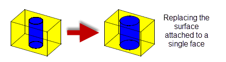

| |
Replacing The Surfaces Of Faces |
| <<< Identifying And Simplifying Model Details | Chapters | Face Tapering >>> |
PK_FACE_replace_surfs_3 tweaks the surfaces of selected faces, by deleting and replacing the existing surfaces with a new list of surfaces which you have created. The list of faces can consist of one or more faces. This function only works on solid bodies, sheet bodies, and non-manifold bodies whose faces are locally manifold. It does not work on faces with no surface geometry.
|
Note: This functionality offers partial support for facet geometry. See the
PK Interface Programming Reference Manual for information on what options are supported. |
You can use PK_FACE_replace_surfs_3 to change the diameter of a hole, as in the following example:
Figure 66-1 Tweaking a single face
You can use PK_FACE_replace_surfs_3 to change the top (planar) face of a cylinder to a sphere and change its cylindrical face to a truncated cone, in the same operation.
Figure 66-2 Tweaking a list of faces
Sometimes, replacing the surfaces of selected faces means that adjacent faces that were previously not mergeable can now be merged. You can control whether or not such merging is performed using the
merge
option (PK_replace_merge_t) in PK_FACE_replace_surfs_o_t. This option can take the following values:
This is illustrated in Figure 66-3.
Figure 66-3 Merging adjacent faces when replacing surfaces
This functionality is also available in PK_FACE_change. See Section 73.4.4, “Replace options”.
If some of the replacement surfaces are variations of the original surfaces, then you can use the
variation_data
option to perform a variational replacement operation.Typical examples of variational replacement operations include deformations and variable offsets.
A replacement surface is a variation of the original surface if both of the following are true:
If your replacement surfaces are variational surfaces, then you can use the
variation_data
option to perform a variational replacement operation. Doing this improves regeneration of both nearly smooth edges and vertices, and laminar edges and vertices, in the result body.
The
variation_data
option contains the following fields:
variation |
Whether or not to improve the generation of smooth geometry for variation faces. Default: PK_replace_variation_no_c. |
variation_faces |
A list of the faces whose replacements surfaces are variations of their original surfaces. |
Figure 66-4 shows a simple example in which both surfaces of the body have been replaced by variational offset surfaces.
Figure 66-4 Replacing surfaces with variational surfaces
This functionality is also available in PK_FACE_change. See Section 73.4.4, “Replace options”.
Figure 66-5 shows a block with two slots where four faces share a single planar surface. Tweaking one of the four faces that share the top planar surface, independently of the others, results in that face being detached from the original shared surface and therefore given a new surface. The remaining three faces still share the original geometry. The same applies to the shared curves.
Figure 66-5 Shared surface after a PK_FACE_replace_surfs_3 operation
PK_FACE_replace_surfs_3 lets you control the way in which the geometry attached to edges (or fins, if an edge is tolerant) is handled when replacing surfaces. You prevent Parasolid from automatically recalculating the geometry attached to particular edges or fins in a model by supplying replacement curves for those edges. Parasolid also provides additional control over the precise conditions in which these replacement curves are used.
The functionality is provided using the following fields in the
edge_data
option in PK_FACE_replace_surfs_o_t:
Note: If the supplied replacement surfaces are such that the operation will result in smooth, tolerant edges, it is recommended that you supply these edges via the
edge_data
option. |
The
edges
,
curves
, and
tolerances
are complementary arrays containing, respectively, the edges whose geometry you want to control, replacement curves for those edges, and tolerance information for the curves. The three arrays should be the same length.
If any of the supplied
curves
is PK_ENTITY_null, then any geometry already associated with its edge is used as the replacement curve. This means that you do not have to supply new curves for every edge whose geometry you want to control, and is particularly useful for those edges whose geometry you believe will remain accurate after the call to PK_FACE_replace_surfs_3.
The array of
tolerances
lets you provide specific tolerance information for each replacement curve (whether it is one you have supplied, or whether it is the geometry already associated with the edge). For a replacement curve to be used, it needs to be within the corresponding tolerance of the surfaces on which it lies. If this is not the case, then either the function will fail, or Parasolid will recalculate the geometry of the edge anyway, as if no replacement curve had been specified, depending on the value of
replace_use
.
The
replace_use
option provides fine control over when the replacement curves (or the original geometry) are used, and takes the following values:
|
Use the replacement curve whenever possible. If any curves cannot be used because they are not within tolerance of the replacement surfaces, Parasolid recalculates the curve and uses that. |
|
|
Only use the replacement curves. If any curves cannot be used because they are not within tolerance of the replacement surfaces, PK_FACE_replace_surfs_3 fails. |
|
|
Provide a combination of the other values:
|
If you use PK_ENTITY_null values in the
curves
array for every edge that you consider to be accurate, and set
replace_use
to PK_replace_use_existing_c, Parasolid warns you if any of these “accurate” edges are, in fact, not accurate, while still recalculating the geometry of other edges. This is particularly useful when cleaning up parts that have been imported into Parasolid, for example as a second stage after fixing up some of the geometry of the part.
Note: Edges supplied in
edge_data
which will be mixed after the operation must have a minimum tolerance of at least 5 times session precision. |
By default, PK_FACE_replace_surfs_3 adjusts the topology of a part after replacing surfaces to ensure that the part remains locally valid. Usually, this is the behaviour you require. Occasionally, it can be useful to turn off this functionality - for example if you are replacing discrete surfaces as part of a larger clean-up procedure when importing a model from another system. You can do this using the
adjust
option in PK_FACE_replace_surfs_o_t.
PK_FACE_replace_surfs_3 allows a wide range of topology changes. However, there are a number it cannot handle. The following attempted operations, illustrated using the previous examples, fail for the reasons explained.
The operation shown in Figure 66-6 fails because the edges at the top and bottom cannot be recalculated. This is because the cylindrical surface no longer intersects the top/bottom faces.

Figure 66-6 Change in topological relationship between top face and hole
The operation shown in Figure 66-7 fails because the radius of the hole has been increased such that the hole has split the planar faces, thereby creating two disjoint solid components in the model.
Figure 66-7 Topological change - hole splits the planar faces
To successfully complete the previous examples you need to use boolean operations.
PK_FACE_replace_surfs_o_t contains an
update
option to maintain consistency when rebuilding models built in older versions of Parasolid. See Section 63.5.2, “Update control”, for information.
| <<< Identifying And Simplifying Model Details | Chapters | Face Tapering >>> |